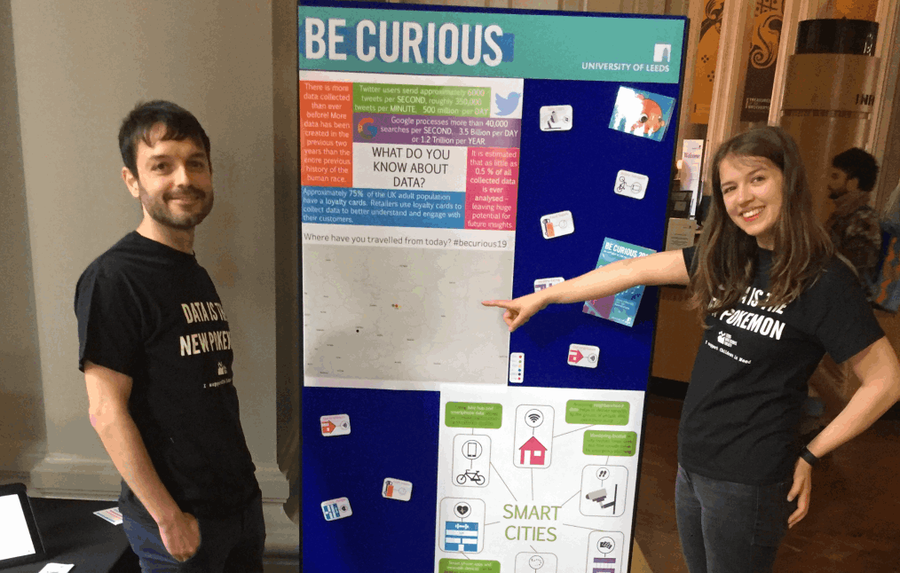

Address
Leeds Institute for Data Analytics
Level 11
Worsley Building
Clarendon Way
Leeds
Contacts
Email: fs14fp@leeds.ac.uk

March 2019
On a sunny Saturday morning the University of Leeds opened its doors for their annual public engagement event 'Be Curious'. This year’s theme was ‘Brighter Futures’ and we decided to use the theme of smart cities to cature our wide range of projects within the CDT. The event caters to all ages so we decided to design a 'smart cities' playmat. Younger children could use toy cars to explore the smart city. Whilst older children matched cards to the symbols on the mat to find all the different data sources around the city and learn how they could contribute towards building brighter futures. For example supermarket loalty card data, fitness trackers, footfall counter and bike hub data; all data the CDT are using in their PhD projects.
This also gave us the opportunity to engage parents, and other adults, in conversations arround responsible data sharing, ethics and opportunities gained from utiling this data.
Read more on the CDT website
Leeds Institute for Data Analytics
Level 11
Worsley Building
Clarendon Way
Leeds
Email: fs14fp@leeds.ac.uk